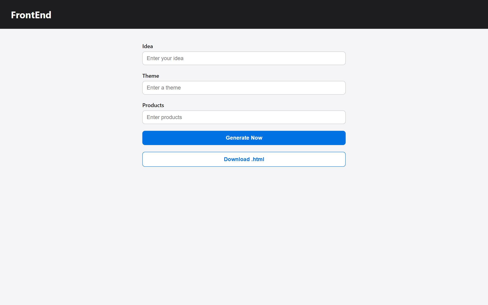

E-Commerce · Multi-page site
Tester · Smart Watch Pro
A full product-marketing and storefront experience — scroll-driven animation, video transitions, and a complete shopping flow.
View siteFull multi-page build
A mix of web builds, frontend concepts, and AI-powered automation — from a full e-commerce experience to a daily briefing that writes and sends itself.
A full product-marketing and storefront experience — scroll-driven animation, video transitions, and a complete shopping flow.
A dark, cinematic scroll study — Paris's iron lattice rising frame-by-frame from a blueprint of light into champagne gold.
A premium consumer-tech brand storefront — smartwatches, glasses, assistants and wearables, with a conversion-focused landing.
A short AI-generated film from Tester Lab — titanium dissolving into liquid gold. A motion experiment in texture and cinematic transition.
Search any topic and surface the top trending items from across the web — each with its source and a direct link.

A browser-native tool that turns a few inputs into homepage concept ideas — generates concept cards via the kie.ai API and exports a downloadable HTML file.
An AI daily sales briefing — pulls leads from Supabase, has Groq rank them by priority, renders an email-safe template, and sends via Resend on a daily cron.